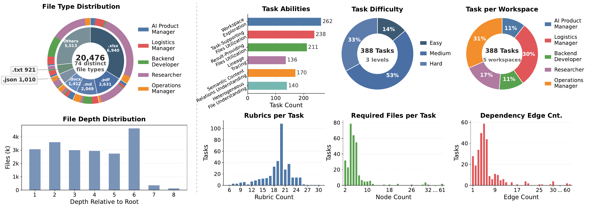

Dataset Visualizations
Dataset intelligence overview for Workspace-Bench 1.0: 5 worker profiles, 74 file types, 20,476 files, 388 tasks, and 7,399 rubrics organized around realistic workspace learning.
| Worker profile | Tasks | Share | Interpretation |
|---|---|---|---|
| Operations Manager | 120 | 31% | Largest operational workspace slice. |
| Logistics Manager | 116 | 30% | Dense coordination and tracking workloads. |
| Researcher | 66 | 17% | Evidence-heavy document and data analysis. |
| Backend Developer | 44 | 11% | Code and configuration-oriented tasks. |
| AI Product Manager | 42 | 11% | Product, requirement, and evaluation artifacts. |
100 tasks, approximately 70% lower evaluation cost, while preserving representative workspace complexity.
74 file types span documents, spreadsheets, code, structured data, media, metadata, configuration, and archives.
Difficulty is driven by hidden dependencies, heterogeneous file reading, and rubric-heavy deliverables.
Task Complexity
The benchmark is organized around realistic professional workspaces. Charts summarize the same public distribution data in a compact dashboard format.
Complexity Drivers
Complexity comes from required evidence, dependency graph shape, role-specific workspace noise, and scoring criteria that require more than a single exact match.
Task Distribution
The official public distribution figure shows how 388 tasks are distributed across worker profiles and difficulty levels, forming the basis for Lite split sampling.
